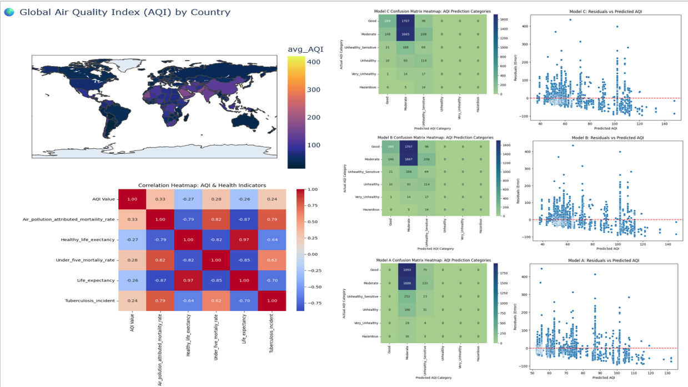
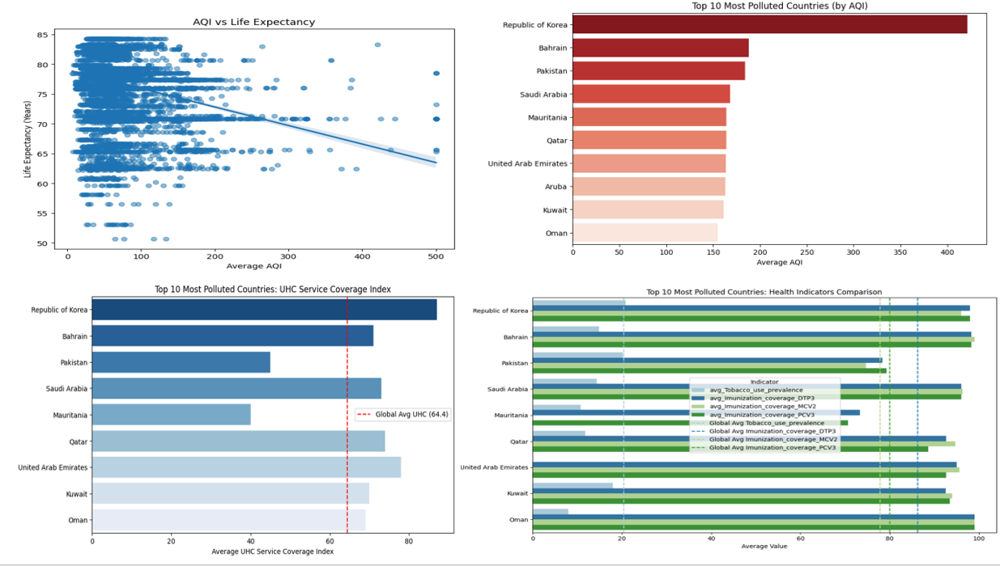

Introduction
CleanAir Futures International (CAFI) is a global nonprofit dedicated to improving air quality and protecting public health. By integrating IoT-based air quality data with WHO health indicators, CAFI identifies the countries facing the highest environmental and health burdens.
Air pollution contributes to nearly 7 million premature deaths each year. Understanding these patterns helps guide targeted interventions and more efficient policymaking.
Data Processing
- Air Quality & Health Dataset: 88,489 records, 12 columns
- WHO Demographics Dataset: 594 records, 54 columns
- Global AQI Dataset: 16,695 records, 14 columns
- Key processing tasks: Cleaning, integration, standardizing keys, handling missing data
Visualization


Models Developed
- Linear Regression Models (A, B, C)
Used 3–5 features with RMSE ranging from 40.59 to 39.78 - Random Forest Classification
10 trees, max depth 5, accuracy: 60.33% - Primary goal: Identify AQI predictors and classify pollution risk categories
Additional Data Insights
- UHC Coverage Index: Shows variability in essential health services
- Vaccine and tobacco prevalence comparisons across most polluted countries
Key Findings
- Local factors like temperature and humidity showed no meaningful impact on AQI
- Higher AQI correlates with higher child mortality and lower life expectancy
- Model C captured ~14% of AQI variation using 5 health metrics
- Pollution hotspots: Republic of Korea, Bahrain, Pakistan, Mauritania, Guinea-Bissau
Policy Recommendations
- Use combined AQI + mortality metrics to identify Tier 1 priority countries
- Deploy fixed monitoring sites in cleaner, at-risk regions
- Use mobile short-term programs for severely polluted areas
- Incorporate equity, feasibility, and infrastructure considerations
Future Work
- Introduce real-time AQI + health monitoring APIs
- Add socioeconomic and structural factors to models
- Improve class imbalance handling for severely polluted categories
- Enhance extreme AQI prediction accuracy